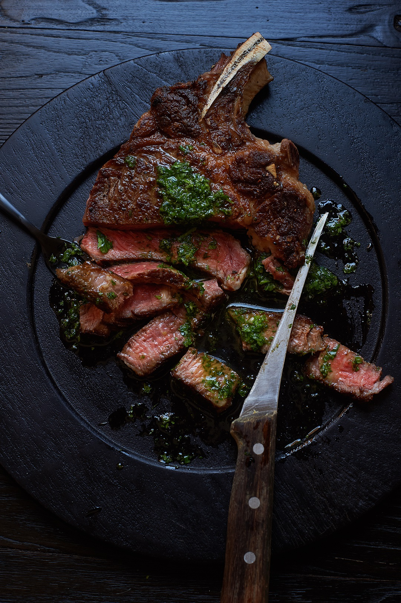

THE BUTCHER'S STEAK

Butcher (or Hangar) steak is great pan cooked, broiled, or grilled.
It takes to marinades wonderfully, and really can be substituted
for any cut of steak.Just be sure to take the time to trim it well.
Prep: 35 mins
Servings: 4
Cook: 15 mins
Total: 50 mins
INGREDIENTS
- 1 Butcher's steak (2 pounds)
- Salt and fresly grounded black pepper to taste
- 1 tablespoon clarified butter
- 2/3 cup chicken broth
- 2 tablespoons cold butter, cut into cubes
- Salt to Taste
PROCIDURE
- Remove all silver skin and extra fat from the steak.Carefully
cut out the connective tissue that connects the two halves of the steak,
separating the whole into 2 long pieces.Cut lobe of meat from one half(it's a piece slightly
seperated from the larger half).Then cut each of the 2 larger halves into 2 steaks each.Sprinkle
with salt and pepper.
- Heat skillet over high heat.Add clarified butter when pan is hot,
then place the steaks in the pan.Reduce heat to medium.Cook untill browned on all sides, firm and
reddish-pink on the inside.an instant-read thermometer inserted into the centre should
read 125 degrees F (52 degrees C), a total of about 12 minutes.(This cut of meat has a sort of triangular shape,
so about 4 minutes per side.)Transfer to a warm plate and tent with foil to let steaks rest and allow
temparature to rise to 130 degrees F.
- Pour stock into skillet set over medium heat.Stir with a wooden spoon scraping up the browned bits from the bottom.
when brownings dissolve and liquid begins to reduce after 2 or 3 minutes, reduce heat to low.Add accumulated
juices from the meat, balsamic vinegar and butter chunks.Cook and stir untill butter melts.
If liquid has reduced too much, add a splash of broth.Taste to check if sauce needs a bit of salt.
- To serve, slice steak and spoon pan sauce over them.